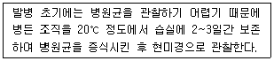
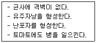
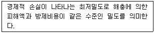
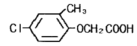

식물보호산업기사 (2016-03-06 기출문제)
1과목: 식물병리학
1. 감자 역병에 대한 설명으로 옳은 것은?
- 빗물에 의해 화기전염 된다.
- 병원균은 기공 또는 각피 침입한다.
- 고온이고 건조한 환경에서 잘 발생한다.
- 괴경지표법으로 선발된 건전한 씨감자를 재배하여 방제할 수 있다.
(정답률: 65%)

2. 답전윤환을 할 경우 담수조건에서 병원균이 파괴되어 병 발생율 크게 줄일 수 있는 것은?
- 역병
- 노균병
- 균핵병
- 무사마귀병
(정답률: 50%)
3. 녹병균에 의해 발생되는 병은?
- 소나무 혹병
- 호두나무 탄저병
- 잣나무 수지동고병
- 밤나무 줄기마름병
(정답률: 68%)
4. 병든 식물의 원인을 파악하기 위해 다음과 같이 처리할 때 병원 진단에 가장 용이한 것은?

- 균류에 의한 병
- 세균에 의한 병
- 바이러스에 의한 병
- 파이토플라스마에 의한 병
(정답률: 79%)
5. 바이러스에 의해 발생하는 병의 주요 매개 수단은?
- 물
- 바람
- 공기
- 곤충
(정답률: 85%)
6. 복숭아나무 잎오갈병의 방제를 위한 디티아온 수화제 살포 방법으로 가장 적합한 것은?
- 발병 초부터 10일 간격 처리
- 발아 직전 및 꽃이 피기 직전 경엽처리
- 춘지 발생시 15일 간격으로 경엽처리
- 6월 상순부터 9월 상순까지 10일 간격 처리
(정답률: 80%)
7. 세균에 의하여 발생하는 식물병의 주요 증상으로만 나열된 것은?
- 혹, 노란 가루
- 빗자루, 모자이크
- 시들음, 가지마름
- 갈색병반, 검은 돌기
(정답률: 86%)
8. 바이러스에 의해서 일어나는 병은?
- 벼 잎집얼룩병
- 콩 모자이크병
- 보리 줄기녹병
- 사과나무 부란병
(정답률: 85%)
9. 무생물적인 요인에 의해 발생하는 병은?
- 토마토 균핵병
- 토마토 풋마름병
- 토마토 점무늬병
- 토마토 배꼽썩음병
(정답률: 86%)
10. 담배 모자이크병 바이러스의 형태는?
- 구형
- 쌍구형
- 간상형
- 막대형
(정답률: 80%)
11. 파이토플라스마에 대한 설명으로 옳지 않은 것은?
- 원핵생물이다.
- 종자전염을 한다.
- 옥시테트라싸이클린계 항생물질에 민감하다.
- 파이토플라스마에 의한 식물의 병은 황화, 위축, 총생 등 전신병징을 나타낸다.
(정답률: 74%)
12. Millardet에 의해 개발된 보르도액에 대한 설명으로 옳은 것은?
- 항생제이다.
- 보호살균제이다.
- 생물농약의 하나이다.
- 처음에는 벼 도열병 방제제로 개발되었다.
(정답률: 91%)
13. 식물병은 주인, 소인, 유인으로 구성된 병삼각형으로 상호관계를 나타낼 수 있다. 다음 중 유인에 해당하는 것은?
- 기생자
- 병든 식물
- 병 발생에 알맞은 환경
- 식물체가 처음부터 가지고 있는 병에 걸리기 쉬운 성질
(정답률: 74%)
14. 병원체와 주요 전반수단이 잘못 짝지어진 것은?
- 물 – 밀 줄기녹병
- 바람 – 보리 겉깜부기병
- 곤충 – 오이 세균성시들음병
- 영양번식기관 – 감자 둘레썩음병
(정답률: 54%)
15. 다음은 어느 병원균에 대한 설명인가?

- 감자 역병균
- 감자 무름병균
- 감자 Y바이러스
- 감자 더뎅이병균
(정답률: 78%)
16. 수목병의 표징이 아닌 것은?
- 소나무 피목에 농황색의 돌기 형성
- 잣나무 줄기에 나타난 황색의 주머니
- 오동나무에 작은 가지가 다수 발생하여 총생
- 일본잎갈나무 부후목 뿌리 부위에 덕다리버섯 발생
(정답률: 82%)
17. 비닐하우스와 같은 시설 내에서 수화제를 살포할 경우 습도가 높아지는 문제점을 해결하기 위하여 사용되는 것은?
- 액제
- 희석제
- 훈연제
- 훈증제
(정답률: 71%)
18. 소나무류에 발생하는 잎녹병의 중간기주가 아닌 것은?
- 쑥부쟁이
- 황벽나무
- 등골나물
- 신갈나무
(정답률: 61%)
19. 식물병의 경종적 방제 방법에 해당하는 것은?
- 식물 검역
- 종자 소독
- 살균제 살포
- 재식밀도 조절
(정답률: 80%)
20. 벼 도열병을 일으키는 병원체는?
- 균류
- 세균
- 바이러스
- 파이토플라스마
(정답률: 70%)
2과목: 농림해충학
21. 곤충 더듬이의 기본구조에서 냄새를 맡는 감각기들이 집중되어 있는 마디는?
- 자루마디
- 채찍마디
- 팔굽마디
- 솜털마디
(정답률: 71%)
22. 기주식물의 잎, 가지, 수피 등에 즙액을 빨아먹어 가해하는 흡즙성해충으로만 올바르게 나열된 것은?
- 박쥐나방, 소나무좀
- 솔나방, 참나무재주나방
- 솔껍질깍지벌레, 버즘나무방패벌레
- 복숭아명나방, 느티나무벼룩바구미
(정답률: 74%)
23. 다음 곤충 중 불완전변태류는?
- 벌목
- 파리목
- 메뚜기목
- 풀잠자리목
(정답률: 68%)
24. 다음 설명에 해당하는 것은?

- 일반평형밀도
- 일반피해밀도
- 경제적 피해수준
- 경제적 피해허용수준
(정답률: 55%)
25. 거미와 비교할 때 곤충의 특징으로 옳지 않은 것은?
- 겹눈과 홑눈이 있다.
- 다리는 3쌍이고 5마디로 구성된다.
- 머리, 가슴, 배 3부분으로 구분한다.
- 생식문이 배의 배면 앞부분에 있다.
(정답률: 79%)
26. 솔잎혹파리가 벌레혹을 만드는 곳은?
- 열매
- 뿌리
- 잎 기부
- 가지 끝
(정답률: 67%)
27. 곤충의 생식에 대한 설명으로 옳지 않은 것은?
- 양성생식 외에도 다양한 방법으로 생식한다.
- 정자는 암컷의 체내에서 오래 살아 있을 수 없다.
- 암컷의 부속샘은 알을 코팅하는 기능도 담당한다.
- 일반적으로 체내수정을 하지만 체외수정을 하는 경우도 있다.
(정답률: 81%)
28. 소화효소를 분비하여 음식물들을 분해한 후 흡수하는 곳은?
- 중장
- 전장
- 후장
- 침샘
(정답률: 83%)
29. 유충의 입틀이 씹는 형태인 것은?
- 솔잎혹파리
- 소나무왕진딧물
- 솔껍질깍지벌레
- 오리나무잎벌레
(정답률: 69%)
30. 나무이가 속하는 목은?
- 벌목
- 파리목
- 노린재목
- 총채벌레목
(정답률: 66%)
31. 유약호르몬이 분비되는 곳은?
- 알라타체
- 앞가슴샘
- 카디아카체
- 신경분비세포
(정답률: 82%)
32. 생물적 방제법에 이용되지 않는 것은?
- 기생자
- 포식자
- 병원균
- 생장조절제
(정답률: 81%)
33. 온도가 곤충에게 미치는 영향으로 가장 거리가 먼 것은?
- 곤충의 크기
- 곤충의 수명
- 곤충의 산란량
- 곤충의 발육속도
(정답률: 72%)
34. 주로 벼를 가해하는 해충으로 옳지 않은 것은?
- 혹명나방
- 이화명나방
- 끝동매미충
- 거세미나방
(정답률: 70%)
35. 제충국의 활성성분을 이용하여 해추의 신경계통을 저해하는 효과가 있는 살충제 유형은?
- urear계
- 유기인계
- 카바마이트계
- 피레스로이드계
(정답률: 47%)
36. 콩잎말이나방의 월동 형태는?
- 알
- 유충
- 성충
- 번데기
(정답률: 62%)
37. 식물체의 뿌리, 줄기 또는 잎을 통하여 약제가 식물 전체에 들어감으로써 식물의 즙액을 흡즙하는 해충을 죽게 하는 살충제를 무엇이라고 하는가?
- 유인제
- 훈증제
- 소화중독제
- 침투성 살충제
(정답률: 84%)
38. 수목에 상처를 내고 산란하여 가지 윗부분을 고사시키는 해충은?
- 말매미
- 선녀벌레
- 사과하늘소
- 애모무늬잎말이나방
(정답률: 66%)
39. 여름철 진딧물과 밤나무순혹벌이 번식하는 방법은?
- 양성생식
- 다배생식
- 유성색식
- 단위생식
(정답률: 77%)
40. 주로 사과나무를 가해하는 해충으로 옳지 않은 것은?
- 멸강나방
- 은무늬굴나방
- 복숭아심식나방
- 조팝나무진딧물
(정답률: 66%)
3과목: 농약학
41. 다음 중 유기인계 살충제는?
- 페니트로치온(fenitrothion), 다이이지논(diazinon)
- 칼탑(cartap), 카바릴(carbaryl)
- 엔드린(enfrin), 카바릴(carbaryl)
- 메소밀(methomyl), 카보푸란(carbofuran)
(정답률: 68%)
42. 다음 농약 중 각종 응애류(mites)의 방제에 가장 적합한 것은?
- 페나자퀸(Fenazaquin)
- 펜티온(fenthion)
- 클로르피리포스(Cholrpyrifos)
- 비티쿠르스타키(Bacillus thringiensis ver. kurstaki)
(정답률: 60%)
43. 제초제의 살초작용인 이행형 제초제와 접촉형 제초제에 대한 설명으로 틀린 것은?
- 접촉형 제초제는 생세포에 직접 작용하여 그 부분을 파괴하여 살초효과를 나타낸다.
- 접촉형 제초제는 작용이 속효적으로 나타난다.
- 이행형 제초제는 수분이나 양분과 함께 약제가 식물체 내로 들어간다.
- 이행형 제초제는 식물체에 처리한 제초제가 뿌리로부터 위쪽으로만 이동한다.
(정답률: 78%)
44. 농약 보관시 주의하여야 할 사항 중 틀린 것은?
- 고형제(固型劑)는 흡습되면 분해가 촉진되므로 건조한 곳에 보관한다.
- 농약 설명서의 약효보증기간은 최악의 조건에서 산정하여 정한 기간이다.
- 대부분의 농약은 고온 및 자외선 접촉 시 분해가 되므로 냉암소에 저장한다.
- 유제는 인화의 위험성이 있으므로 화기를 피하여 보관한다.
(정답률: 78%)
45. 다음 중 농약의 사용기구가 아닌 것은?
- 분무기
- 미스트기
- 살분기
- 포자기
(정답률: 81%)
46. 다음과 같은 화학구조를 가지는 제초제는?

- 2,4-D
- EPN
- MCP
- TBA
(정답률: 62%)
47. 0.01% 액은 몇 ppm 인가?
- 10
- 100
- 1000
- 10000
(정답률: 64%)
48. 농약의 분류 중 농약형태에 따른 분류인 것은?
- 유인제
- 기피제
- 식독제
- 도포제
(정답률: 67%)
49. 농약제조 시 보조제로 첨가하는 계면활성제에 대한 설명으로 틀린 것은?
- 원제를 녹이기 위해 사용하는 물질이다.
- 액체 제형은 살포용수에서 유화액 상태로 균일하게 분산되게 한다.
- 살포약액이 병해충 및 잡초에 대한 접촉효율을 높이는 데에도 사용된다.
- 약액의 표면장력을 낮추는 작용을 한다.
(정답률: 56%)
50. 유제(乳劑) 농약이 물에 잘 섞이는가를 검사하고자 할 때 가장 중요한 성질은?
- 유화성(乳化性)
- 부착성(附着性)
- 고착성(固着性)
- 붕괴성(崩壞性)
(정답률: 81%)
51. 포자의 침입 및 발아를 저지하고 균사의 생육을 저해하여 병반의 확대, 진전을 억제하는 효과가 있으므로 예방과 치료효과를 동시에 발휘하는 생합성 저해제 농약은?
- 포리옥신(polyoxin)
- 캡탄(captan)
- 피레트린(pyrethrin)
- 씨마진(simazine)
(정답률: 51%)
52. 살균제의 작용기작이 아닌 것은?
- 세포막구조 파괴
- 신경기능 저해
- 생합성 저해
- 호흡 저해
(정답률: 49%)
53. 12% 바리신분제 1kg을 1% 분제로 조제하고자 할 때 필요한 증량제의 양은 약 kg 인가?
- 10
- 11
- 12
- 13
(정답률: 65%)
54. 유효성분의 생물학적 활성을 증대시키기 위하여 사용되는 물질은?
- 점착제
- 점증제
- 협력제
- 소포제
(정답률: 73%)
55. 농약관리법에서 사용되는 용어의 정의로 틀린 것은?
- 농약의 범주에는 농립축산식품부령이 정하는 기피제, 유인제 등도 포함된다.
- 농약이란 농작물의 생리기능을 증진하거나 억제하는데 사용하는 약제를 포함한다.
- 원제란 농약의 유효성분이 농축되어 있는 물질을 말한다.
- 농작물이란 수목 및 임산물을 제외한 모든 농산물을 말한다.
(정답률: 77%)
56. 곤충의 먹이가 되는 부분에 약제를 뿌려 줄기나 잎을 갉아먹는 해충으로 하여금 먹이와 함께 소화기에 독성을 흡수시켜 살충력을 나타내는 약제를 무엇이라고 하는가?
- 독제
- 접촉제
- 침투성 살충제
- 훈증제
(정답률: 64%)
57. DEP제(디프테릭스)가 분해하여 1차로 변하는 형태는?
- Parathion
- DDVP
- Trithion
- Dimethoate
(정답률: 74%)
58. 수화제의 현수성을 가장 좋게 하기 위한 증량제의 조건은?
- 증량제의 비중 ＞ 농약의 비중
- 증량제의 비중 ＜ 농약의 비중
- 증량제의 비중 = 농약의 비중
- 증량제 및 농약의 비중에는 무관
(정답률: 67%)
59. 농약에 의한 약해 발생의 원인이라고 볼 수 없는 것은?
- 고농도 살포
- 합리적 혼용
- 사용방법 미숙
- 부적합한 약제 사용
(정답률: 79%)
60. 독성을 표시할 때 중앙 치사량 LD50이란?
- 실험동물에 약을 처리하였을 때 20%를 죽이는 농약의 분량
- 실험동물에 약을 처리하였을 때 30%를 죽이는 농약의 분량
- 실험동물에 약을 처리하였을 때 40%를 죽이는 농약의 분량
- 실험동물에 약을 처리하였을 때 50%를 죽이는 농약의 분량
(정답률: 83%)
4과목: 잡초방제학
61. 식물이 분비하거나 생체 혹은 수확 후 잔여물 및 종자 등에서 독성물질이 분비되어 다른 식물 종의 생장을 저해하는 현상은?
- Allelopathy
- Competition
- Fertilization
- Contamination
(정답률: 71%)
62. 2.5%의 유효성분을 함유한 제초제를 논 1ha당 30kg을 살포하였다. 물의 깊이가 5cm일 때 처리된 제초제의 농도를 ppm으로 환산하면?
- 0.15
- 1.5
- 15
- 150
(정답률: 51%)
63. 잔디밭의 클로버 방제에 가장 적절한 제초제는?
- 옥사디아존 유제
- 메코프로프 액제
- 할로설퓨론메틸 입제
- 벤설퓨론메틸·뷰타클로르 입제
(정답률: 56%)
64. 주어진 지표면을 먼저 점유한 식물이 후에 발생한 식물보다 경합에 유리하다. 이를 이용한 잡초 방제 기술로 옳지 않은 것은?
- 이앙 재배
- 적기 파종
- 시비량 증대
- 재식밀도 증가
(정답률: 66%)
65. 잡초의 생리 및 생태적 특성이 아닌 것은?
- 휴면성을 가지고 있다.
- 유묘기의 생장속도가 빠르다.
- 주로 영양번식은 1년생 잡초가 한다.
- 종자 및 영양번식기관으로 번식한다.
(정답률: 78%)
66. 벼의 유효분얼이 끝날 때부터 유수형성기 이전까지 살포하는 제초제는?
- 이사-디 액제
- 티오벤카브 유제
- 뷰타클로르 유제
- 사이할로포프뷰틸·프로파닐 유제
(정답률: 68%)
67. 설포닐우레아(sulfonylurea)계 제초제의 작용 기작은 무엇인가?
- 지방산 억제
- 호흡작용 억제
- 세포분열 억제
- ALS효소 저해
(정답률: 52%)
68. 겨울작물(밀, 유채 등) 포장에서 발생이 많은 잡초는?
- 여뀌
- 바랭이
- 쇠비름
- 벼룩나물
(정답률: 53%)
69. 다년생 잡초가 아닌 것은?
- 쑥
- 피
- 가래
- 향부자
(정답률: 71%)
70. 잡초의 밀도가 증가하면 작물의 수량이 점차 감소되지만 어느 수준 밀도 이하에서는 잡초가 존재하더라도 작물의 수량에 크게 영향을 미치지 않는 잡초 밀도는?
- 상호억제 대립밀도
- 작물생육 한계밀도
- 잡초생육 한계밀도
- 잡초허용 한계밀도
(정답률: 73%)
71. 밭에 주로 발생하는 잡초는?
- 마디꽃
- 쇠털골
- 명아주
- 사마귀풀
(정답률: 62%)
72. 잡초종자는 일반적으로 휴면성을 가지고 있다. 휴면의 원인으로 옳지 않은 것은?
- 두꺼운 종피
- 불완전한 배
- 생장촉진제 처리
- 발아억제물질 작용
(정답률: 76%)
73. 페녹시계에 속하는 제초제가 아닌 것은?
- 이사-디 액제
- 엠시피에이 액제
- 니코설퓨론 액상수화제
- 할록시포프-아르-메틸 유제
(정답률: 59%)
74. 물옥잠과 잡초에 해당하는 것은?
- 물피
- 물수세미
- 물고랭이
- 물달개비
(정답률: 68%)
75. 방제법의 종류와 그 예가 잘못 짝지어진 것은?
- 물리적 방제법 : 흑색 비닐멀칭을 실시한다.
- 재배적 방제법 : 작물 파종 전 경운을 실시한다.
- 생물적 방제법 : 상호대립억제작용을 이용한다.
- 예방적 방제법 : 농업용수의 유입구에 잡초 종자 거름망을 설치한다.
(정답률: 60%)
76. 비늘줄기인 인경으로 번식하는 광엽잡초는?
- 가래
- 여뀌
- 올방개
- 매자기
(정답률: 48%)
77. 농경지에 발생하는 잡초군락의 구성변화에 관여하는 가장 중요한 요인은?
- 제초제 사용
- 경운정지의 변화
- 재배법 등 경지 이용형태의 변화
- 토지기반정비에 의한 입지조건의 변화
(정답률: 66%)
78. 잡초의 영양기관에 대한 설명으로 옳지 않은 것은?
- 영양생식을 좌우하는 환경요인으로 토성, 일장, 광도, 무기성분 등이 있다.
- 향부자는 높은 광도 조건에서 경엽의 증가보다 괴경의 증가를 촉진한다.
- 대부분의 다년생 잡초는 사질토보다는 중점토에서 지하영양기관의 생성이 빠르다.
- 토양 중의 무기성분함량이 충분한 조건하에서는 대부분 다년생 잡초는 유성번식 보다는 영양번식의 속도가 촉진된다.
(정답률: 57%)
79. 보리밭에서 발생하는 다년생 광엽잡초에 대해 선택적으로 효과가 있는 약제는?
- 벤타존 액제
- 뷰타크롤르 유제
- 메타벤즈티아주론 수화제
- 사이할로포프뷰틸·프로파닐 유제
(정답률: 58%)
80. 잡초로 인한 농경지의 피해가 아닌 것은?
- 병해충의 매개
- 토양침식의 가속화
- 농작업 환경의 악화
- 경합에 의한 작물수량 감소
(정답률: 81%)